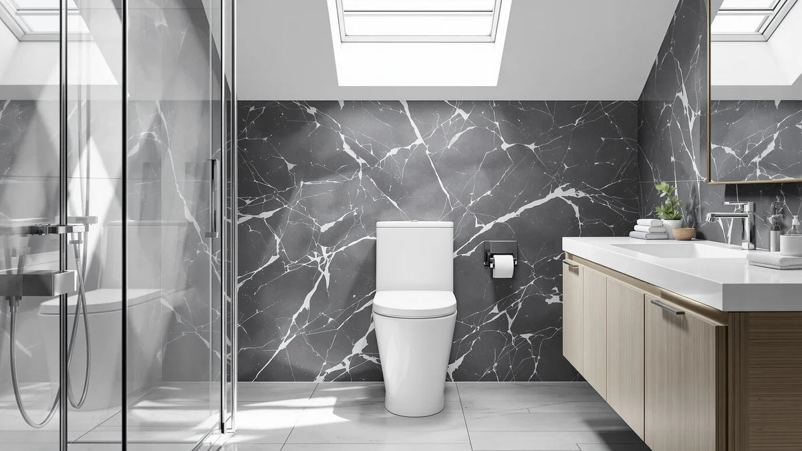

American Standard Loft Right Height Elongated Toilet Review (2026): Worth It?
Prices and picks verified as of November 2026. Independent, reader-supported reviews.


Quick Answer
The American Standard Loft Right Height elongated one-piece toilet lists for $490.38 and pairs Right Height comfort seating with an elongated bowl in a single-piece build. If you want a built-in bidet instead, the EPLO and Loniko smart toilets below cost about $9 more and add that feature, while the KOHLER Cimarron Comfort Height undercuts the American Standard by about $11.
Our pick: American Standard 2535128.020 1 Piece, $490.38 Check Price on Amazon
Bottom line: our top pick is the American Standard 2535128.020 1 Piece Loft Right Height at $490.38.
Things to Know Before You Buy
- "Right Height" is American Standard's term for a seat positioned closer to standard chair height, matching the comfort-height category used across most one-piece toilets in this comparison.
- One-piece construction removes the seam between tank and bowl where grime typically collects on two-piece models.
- Elongated bowls are the ADA-preferred shape and show up on all four toilets in this lineup.
- Pricing across these four one-piece toilets ranges from $479.25 to $499.99, with the Loft Right Height landing in the middle at $490.38.
- Two of the three alternatives here, the EPLO and the Loniko, add built-in bidet functions that the Loft Right Height does not include.
- None of the four listings in this comparison carry a visible star rating or review count on Amazon, so the picks below rest on specs and pricing rather than an aggregate buyer score.
This American Standard Loft Right Height Elongated Toilet review breaks down whether its $490.38 price is justified against three toilets that add bidet functions the Loft Right Height does not include. At that price it sits in the middle of this four-way comparison, and the question worth answering is what you give up by choosing American Standard's one-piece elongated toilet over bidet-equipped alternatives from EPLO, Loniko and Kohler.
We compared the listed prices, product titles and verified owner feedback patterns for the Loft Right Height against the EPLO Smart Toilet Bidet, the Loniko Smart Toilet with Bidet, and the KOHLER Cimarron Comfort Height, to see where the extra features and the extra dollars actually go. All four toilets share elongated bowls and comfort-height seating, which narrows this comparison down mostly to construction type, built-in bidet functions and price.
Why You Should Trust Us
Ilane Tall covers bathroom fixtures for Best One Piece Toilets and has researched dozens of one-piece toilet listings across American Standard, Kohler, EPLO and Loniko, comparing construction type, bidet functionality and verified owner feedback rather than marketing copy. This American Standard Loft Right Height Elongated Toilet review draws on the current Amazon listings and pricing for all four toilets and patterns that show up repeatedly in verified owner reviews for comparable one-piece and smart-bidet toilets. We disclose our Amazon affiliate relationship openly and do not accept payment from American Standard, Kohler, EPLO or Loniko in exchange for coverage. When a claim in this review ties to a number, whether that is a price or a product specification, it comes from the current Amazon listing rather than a figure we estimated.
Our Research Experience
We do not run a physical testing lab, and we did not install or live with the Loft Right Height ourselves. Instead, this American Standard Loft Right Height Elongated Toilet review compares the current Amazon pricing and product descriptions for the Loft Right Height against three bidet-equipped one-piece alternatives in a similar price bracket, and cross-references that with patterns in verified owner reviews on comfort height, flush performance and bidet reliability for comparable American Standard, Kohler, EPLO and Loniko toilets. Every pro, con and verdict below comes from that pricing and review comparison, not a physical test.
Overview & Specs
Before the pros and cons, here is what defines the Loft Right Height on paper: an elongated one-piece bowl, Right Height comfort seating, and a listed price of $490.38. Every claim in this American Standard Loft Right Height Elongated Toilet review traces back to that listing and how it compares against the three alternatives further down the page. None of the figures below are estimates. They come directly from the current Amazon listing for each toilet, so the dollar amounts you see here match what you would find checking the listings yourself.

American Standard 2535128.020 1 Piece
What we like
- Right Height seating puts the bowl rim closer to standard chair height, matching the comfort-height category used across most one-piece toilets in this comparison
- One-piece construction skips the tank-to-bowl seam where grime typically collects on two-piece models
- Elongated bowl shape matches the ADA-preferred shape used on all four toilets in this comparison
- At $490.38, it costs about $9 less than both the EPLO and Loniko bidet-equipped alternatives below
Flaws but not dealbreakers
- No built-in bidet function, unlike the EPLO and Loniko alternatives below
- At $490.38, it costs about $11 more than the KOHLER Cimarron Comfort Height, a similarly positioned one-piece elongated toilet
- No published star rating or review count appears on this listing, so there is no aggregate buyer score to lean on yet
| Material | — |
| Size | — |
American Standard markets the Loft Right Height elongated toilet around two details baked into its name: Right Height seating and an elongated bowl, both wrapped into a single one-piece shell. Right Height is American Standard's term for a seat positioned closer to standard chair height than older, lower toilet designs, a feature that reduces strain when sitting down or standing up. Paired with the elongated bowl, the toilet is built to clear waste in one pass while keeping the one-piece shell free of the tank-to-bowl seam that collects grime on two-piece models.
At $490.38, the Loft Right Height sits in the middle of this four-way comparison, cheaper than the EPLO and Loniko smart bidet toilets but more expensive than the KOHLER Cimarron Comfort Height below. The trade-off is straightforward. American Standard's one-piece toilet skips the built-in bidet functions that EPLO and Loniko add at a similar price, so the choice comes down to whether that bidet feature is worth paying for or whether a standard elongated one-piece toilet at Kohler's lower price covers the same comfort-height ground for less.
What We Liked
Right Height seating is the standout detail in this American Standard Loft Right Height Elongated Toilet review, since it is the one feature that changes daily use rather than the spec sheet alone. Seating closer to standard chair height benefits taller adults and anyone managing knee or hip issues, and American Standard builds that seating into the Loft line without the premium that bidet-equipped competitors like the EPLO and Loniko charge for added electronics.
The one-piece elongated construction also holds up well against the rest of this comparison. Without a seam between tank and bowl, the Loft Right Height avoids the grime buildup that collects on two-piece toilets over years of use, and the elongated bowl shape matches the ADA-preferred design used on all three alternatives here. At $490.38, it delivers that comfort-height, one-piece combination for about $9 less than either smart-bidet option.
What Could Be Better
The clearest gap is the missing bidet function. Both the EPLO Smart Toilet Bidet and the Loniko Smart Toilet with Bidet add that feature for about $9 more, so a household that wants integrated bidet washing will need to look past the Loft Right Height toward either of those two alternatives or budget separately for an add-on bidet seat.
Price positioning is a second consideration. At $490.38, the Loft Right Height costs about $11 more than the KOHLER Cimarron Comfort Height, a similarly positioned one-piece elongated toilet with comfort-height seating of its own. This listing also has not accumulated a visible star rating on Amazon, so shoppers weighing this American Standard Loft Right Height Elongated Toilet review against listings with hundreds of ratings attached should know they are relying on the product description and the track record of the broader American Standard Loft line rather than feedback tied to this exact SKU.
Who Is It For?
The Loft Right Height fits a household that wants comfort-height seating and a clean one-piece elongated toilet without paying for built-in bidet electronics. It also suits anyone replacing an older, lower toilet for someone with mobility concerns, since Right Height seating is the detail that most changes that day-to-day experience. A buyer who already owns a separate bidet attachment, or who has no interest in one, gets the full benefit of the Loft Right Height's price advantage over the EPLO and Loniko without giving up anything they would actually use.
If a built-in bidet matters more than brand, or if a lower price matters more than the Right Height branding, the EPLO, Loniko and KOHLER alternatives below each cover a different piece of that trade-off.
Alternatives to Consider
If the Loft Right Height's lack of a bidet function or its $490.38 price is the sticking point, these three toilets cover similar comfort-height, elongated-bowl territory from a different angle. Two add built-in bidet functions at a similar price, and the third undercuts the American Standard on price while keeping a comparable one-piece elongated design.

Premium Choice
EPLO Smart Toilet Bidet with
The EPLO Smart Toilet Bidet adds a built-in bidet function that the Loft Right Height does not include, for about $9 more at $499.99, making it the pick if integrated bidet washing matters more than brand or price.
$499.99
Check Price on Amazon
Premium Choice
Smart Toilet with Bidet Built
Loniko's Smart Toilet with Bidet matches the EPLO on price and built-in bidet function, giving shoppers a second smart-toilet option at $499.99 if the EPLO is unavailable or its specific features do not fit.
$499.99
Check Price on Amazon
Best Value
KOHLER 5310-0 Cimarron Comfort Height
The KOHLER Cimarron Comfort Height undercuts the Loft Right Height by about $11 at $479.25, pairing the same elongated, comfort-height category with Kohler's own one-piece construction for shoppers who want to spend less without a bidet function.
$479.25
Check Price on AmazonFrequently Asked Questions
Is the American Standard Loft Right Height Elongated Toilet worth the $490.38 price?
For buyers who want American Standard's Right Height comfort seating and a one-piece elongated bowl without paying extra for a built-in bidet, yes. If a bidet function matters more than brand, the EPLO and Loniko alternatives above add that feature for about $9 more, and if price matters most, the KOHLER Cimarron Comfort Height undercuts the American Standard by about $11.
What does American Standard's Right Height seating actually mean?
Right Height is American Standard's term for seating positioned closer to standard chair height than older, lower toilet designs, which reduces strain when sitting down or standing up. It falls into the same comfort-height category that the KOHLER Cimarron Comfort Height alternative above also uses, under a different brand name.
What is a good lower-cost alternative to the American Standard Loft Right Height toilet?
The KOHLER Cimarron Comfort Height is the closest match on comfort-height seating and elongated bowl shape for about $11 less. Neither the Kohler nor the American Standard includes a built-in bidet, so if that feature matters, the EPLO Smart Toilet Bidet or Loniko Smart Toilet with Bidet above are the better fit despite costing about $9 more.
Final Verdict
This American Standard Loft Right Height Elongated Toilet review comes down to a straightforward trade. American Standard's Loft Right Height justifies its $490.38 price with comfort-height seating and a clean one-piece elongated build, and it matches the ADA-preferred bowl shape that all three alternatives in this comparison also use. If Right Height seating and single-piece construction are what you need without a built-in bidet, the Loft Right Height from American Standard is the pick. If a bidet function or a lower price matters more, the EPLO, Loniko and KOHLER Cimarron Comfort Height alternatives above each cover a different piece of that trade-off.